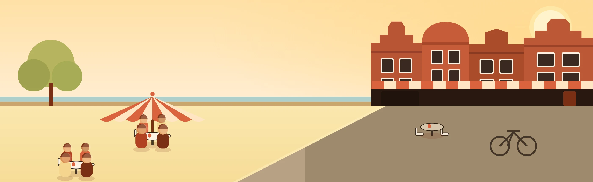
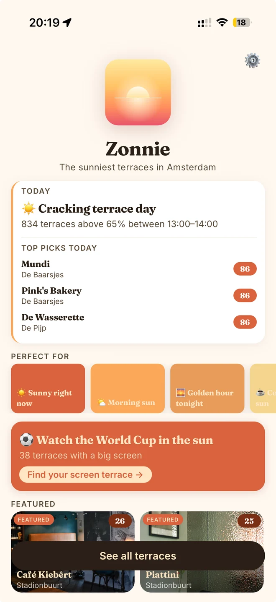
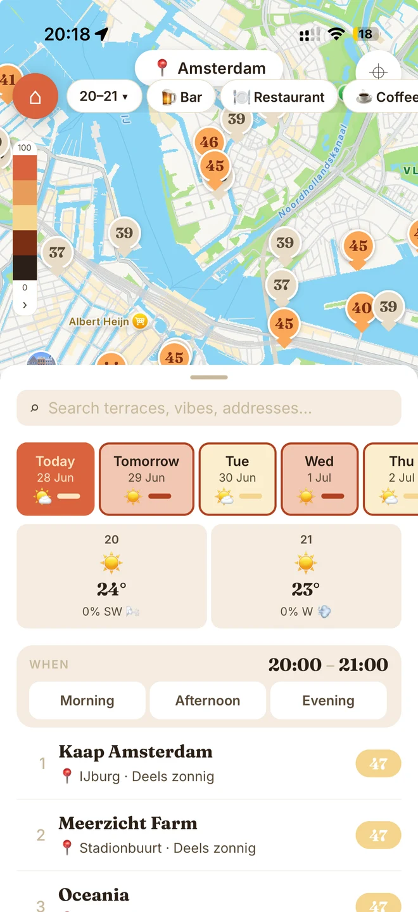
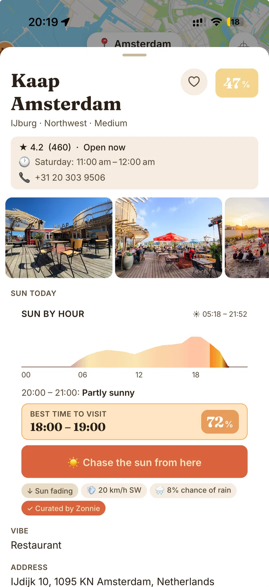

Het zonnigste terras in Amsterdam — nu, of op elk uur vandaag.
Gratis · Geen account · 1.300+ terrassen

Live demo · echte data
Sleep de zon over de dag en zie alle 1.330 echte terrassen live herschikken — hetzelfde zonmodel dat de app aandrijft, hier in je browser.
Live terrasdata laden…
Toont zonpotentieel bij heldere hemel per uur. De app legt live bewolking eroverheen.
De app
Een dagelijkse blik op de zon, een live kaart met gescoorde terrassen, en het exacte uur waarop elk terras op z'n best is.

Eén blik op de dag en je zonnigste plekken — zodra je de app opent.

Elk terras, gescoord van 0–100 op zon en kleurgecodeerd, per minuut bijgewerkt.

Zie precies wanneer een terras zonnig is, de beste tijd om te gaan, en Volg de zon vandaar.
Het vlaggenschip
De zon verschuift — jij dus ook. Zonnie stippelt een korte wandelroute uit die je in het licht houdt: begin zonnig, hop verder zodra de schaduw komt, eindig op een plek in het gouden uur. Eén tik deelt de route in de groepsapp.
Wat Zonnie doet
Een nauwkeurig algoritme plaatst de zon aan de Amsterdamse hemel voor elke datum en elk uur. Geen schattingen.
De 3D-hoogtes van Amsterdamse gebouwen (LIDAR) voeden de kaart, zodat scores het licht weergeven dat de stad écht toelaat.
Open-Meteo voedt live Amsterdams weer in, zodat scores de échte lucht weergeven — niet de kalender.
Bars, restaurants en koffiebars — met de hand samengesteld in elke Amsterdamse buurt.
Is het een terrasdag, wanneer is de zon op z'n best, en je beste zonnige plekken nú — in één oogopslag.
Geen account, geen analytics, geen advertentie-SDK's. Je gegevens blijven op je toestel. Altijd.
Hoe het werkt
Gebruik de chips — Nu, Middag, Avond — of sleep de schuif naar elk exact uur.
Elk terras krijgt een zonscore van 0–100 op basis van de zonnestand, gebouwschaduw en live bewolking.
Filter op buurt of type, tik een terras aan voor de tijdlijn per uur, of Volg de zon door de middag.
Per buurt
Goed om te weten
Download Zonnie en vind het zonnigste terras in Amsterdam — nu, en de hele middag.
Gratis downloaden op iOS